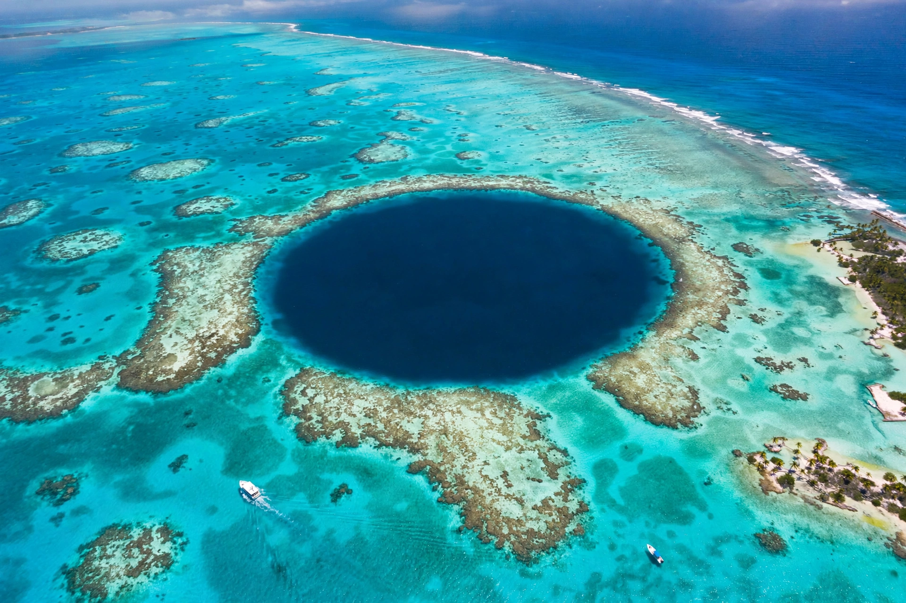

Belize
Belize is a country on the north-eastern coast of Central America, bordered by Mexico to the north, Guatemala to the west and south, and the Caribbean Sea to the east. It has the only English official language in Central America and is a Caribbean Community (CARICOM) member with strong ties to both regions.
| Belize | |
|---|---|
 | |
| Capital | Belmopan |
| Largest city | Belize City |
| Official language | English |
| Population | c. 400,000–440,000 |
| Independence | 21 September 1981 (from the UK) |
History
Belize was home to major Maya cities such as Caracol, Xunantunich and Lamanai; Maya population collapsed after Spanish contact but Maya communities persisted. From the 17th century, British Baymen settled for logwood and mahogany extraction, defeating a Spanish invasion at the Battle of St. George's Caye (1798). The colony of British Honduras was formalised in 1862, renamed Belize in 1973, and granted independence in 1981, with Britain retaining a defence force against Guatemala's territorial claim (largely resolved through an ICJ process agreed in 2019 referendums). The capital moved from Belize City to Belmopan after Hurricane Hattie (1961).
Geography and environment
Low, swampy coastal plains rise to the Maya Mountains in the south, reaching Doyle's Delight (1,124 m). Offshore lies the Belize Barrier Reef, the largest barrier reef in the northern hemisphere and a UNESCO World Heritage Site, with the Great Blue Hole, atolls such as Turneffe and Lighthouse Reef, and the world's only jaguar preserve at Cockscomb Basin. Climate is tropical, with a June–November hurricane season.
People and economy
The population is diverse: Mestizo, Creole (Kriol), Maya, Garifuna, East Indian, Mennonite and others, speaking English, Kriol, Spanish, Mayan languages and Garifuna. The economy depends on tourism (especially reef and eco-tourism), agriculture (citrus, sugar, bananas), and services; Belize is known in finance for its offshore sector. Notable culture includes Garifuna music (punta), Settlement Day, and September Celebrations.
See also
Recreated from memory for muse-webcrawl.